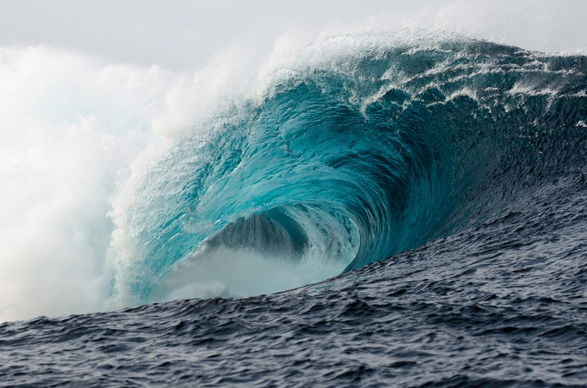

Tsunami's
Wat is een Tsunami?
Een tsunami is een extreem hoge golf uit de zee die de kuststrook onverwacht overspoelt, veelal veroorzaakt door een zeebeving, of bijvoorbeeld een golf in een fjord als gevolg van het afbreken van een deel van een berg
aan de fjord. Het is een Japanse samenstelling van tsu ('haven') en nami ('golf').
Oorzaken
Elke gebeurtenis waardoor een grote hoeveelheid water in korte tijd wordt verplaatst kan een tsunami veroorzaken. Zo'n vloedgolf kan onder meer veroorzaakt worden door:
- een zeebeving, dit is een aardbeving waarvan het epicentrum in zee ligt;
- een vulkanische uitbarsting onder zee of vlak aan zee, eventueel in combinatie met een grote aardverschuiving, modderstroom of gloedwolk langs de vulkaanhelling de zee in;
- (zeer zeldzaam) een meteorietinslag
Natuurkunde van een tsunami
Bij schoksgewijze beweging van de zeebodem langs geologische breuklijnen kunnen plotsklaps grote volumes water opgetild worden of wegzakken, vooral als zich een zeebeving op kilometers diepte voltrekt. Aan het
wateroppervlak ontstaat in incidentele gevallen over een groot gebied een golf met een hoogte van 'slechts' enkele decimeters en een enorme golflengte (tot honderden kilometers lengte). De golf verplaatst zich in alle richtingen vanuit het
ontstaansgebied, waarbij in het ontstaansgebied secundaire golven ontstaan. Afhankelijk van de beweging van de zeebodem aan weerszijden van de breuklijn vertrekt eerst een golfdal (een kuil in de waterspiegel) of juist een golftop.
Op de oceaan is het passeren van een dergelijke langgerekte golf nauwelijks merkbaar: windgolven kunnen daar veel grotere hoogtes bereiken (tot 10 meter) maar die hebben slechts een golflengte van 200 meter. Nauwkeurige dieptemeters en
gespecialiseerde satellieten kunnen tsunamigolven op de oceaan direct meten. Wanneer de tsunamigolf bij de kust ondieper water bereikt vertraagt de voortplantingssnelheid aanzienlijk. Daarbij wordt de golf hoger, afhankelijk van de locatie
langs de kustlijn (baai, rif, kaap, fjord) en grootte van de golf op open zee tot enige tientallen meters boven de normale vloedlijn. De energie die in een tsunamigolf is opgeslagen is veel groter dan in een losse windgolf. De waterbeweging
vindt bij een tsunami plaats tot op de zeebodem, terwijl een golf door de wind slechts aan het oppervlak van de zee te merken is. Bij het bereiken van een kritieke hoogte aan de kust breekt de tsunami en rollen krachtige uitlopers verder het
land in. In dit krachtige proces verliest de tsunami zijn energie uiteindelijk aan turbulentie en wrijving met zeebodem, kust, vegetatie en bebouwing.
Een windgolf bereikt een snelheid tot 40 km/u, maar een tsunami kan zich met een veel hogere snelheid verplaatsen. De periode van een tsunami (het tijdsverloop tussen het passeren van twee toppen) bedraagt een kwartier tot een uur. In diep
water, zoals in de oceanen, bereiken tsunami's hun grootste snelheid, tot 1000 kilometer per uur. De snelheid vg van de golf hangt af van de waterdiepte volgens de relatie:
Waarin geldt:
- is de golfsnelheid in m s−1
 is de valversnelling van 9,81 m s−2
is de valversnelling van 9,81 m s−2 is de diepte in m
is de diepte in m
Waarschuwingssystemen
Waarschuwingssystemen voor vloedgolven berusten op het bewaken van de beweging van het oceaanoppervlak en van grote aardbevingen dieper in zee. Sinds 1965 is het Tsunami Warning System in the Pacific actief, dat getijdestations gebruikt om tsunami's te volgen. Sinds 1996 bestaat het DART-systeem (Deep-ocean Assessment and Reporting of Tsunamis), dat in 2004 nog in een experimenteel stadium verkeerde. Waterdrukmeters op diepte communiceren via geluidssignalen met boeien, die erboven drijven. Tsunamigolven kunnen door drukmeters op grotere diepte waargenomen worden doordat waterbewegingen door windgolven niet zo diep reiken en doordat de drukverschillen door getijdebewegingen op de oceaan regelmatig en volkomen voorspelbaar zijn.